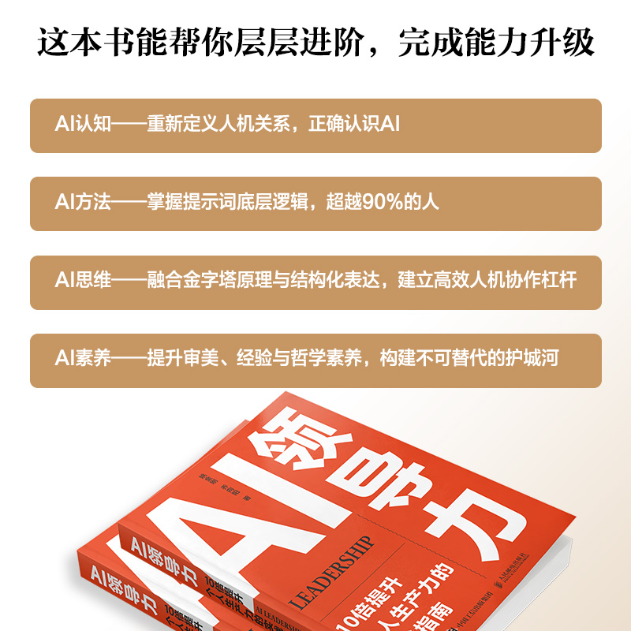
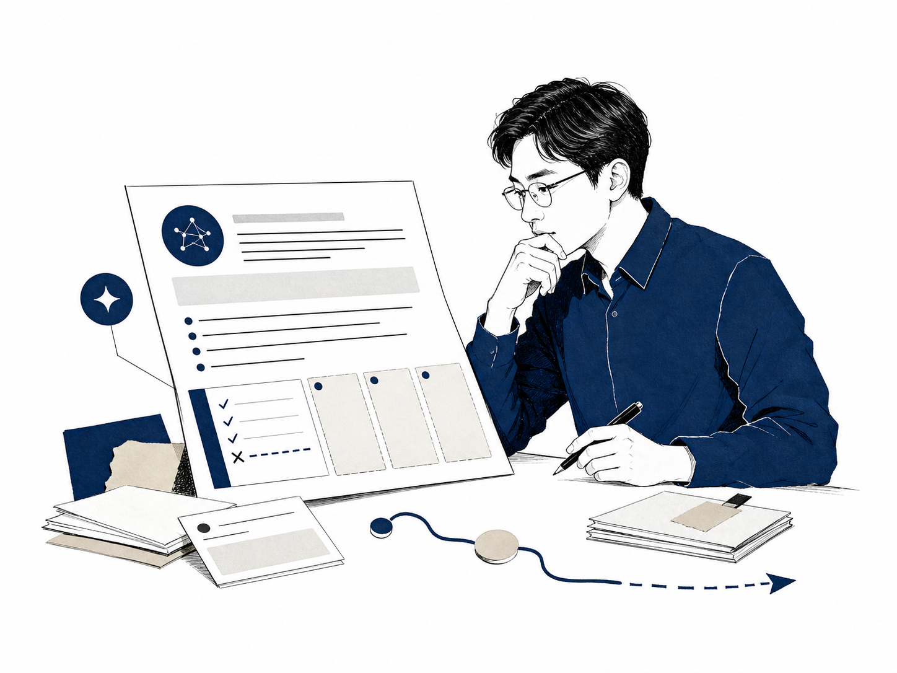
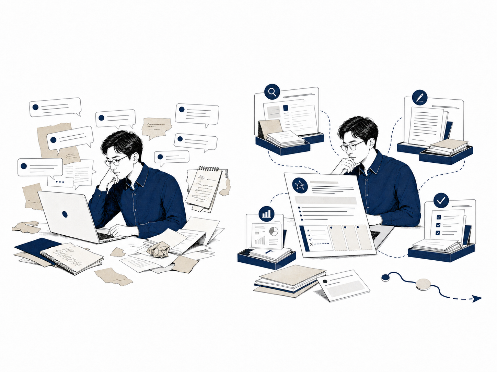
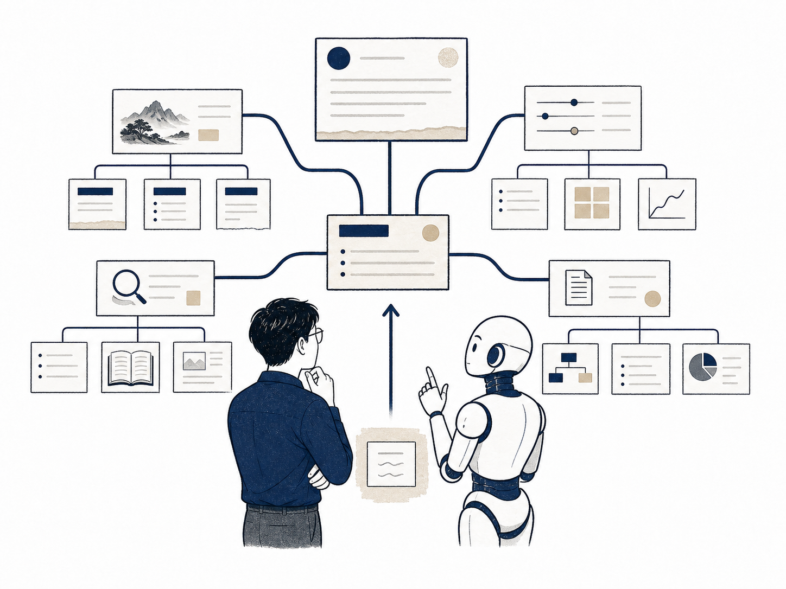
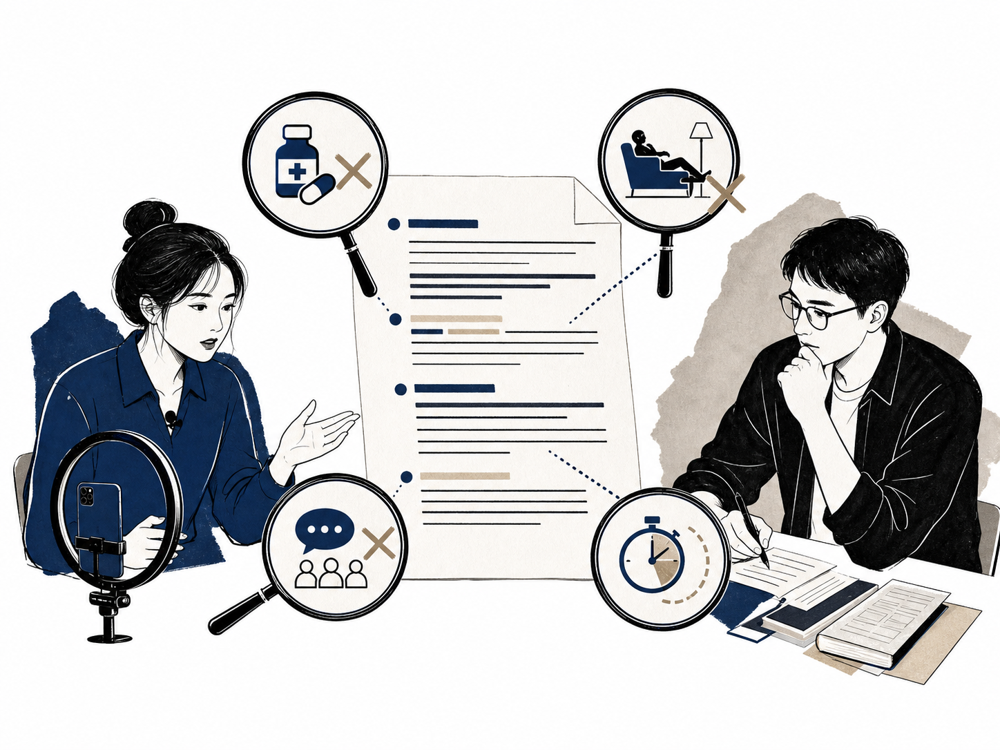
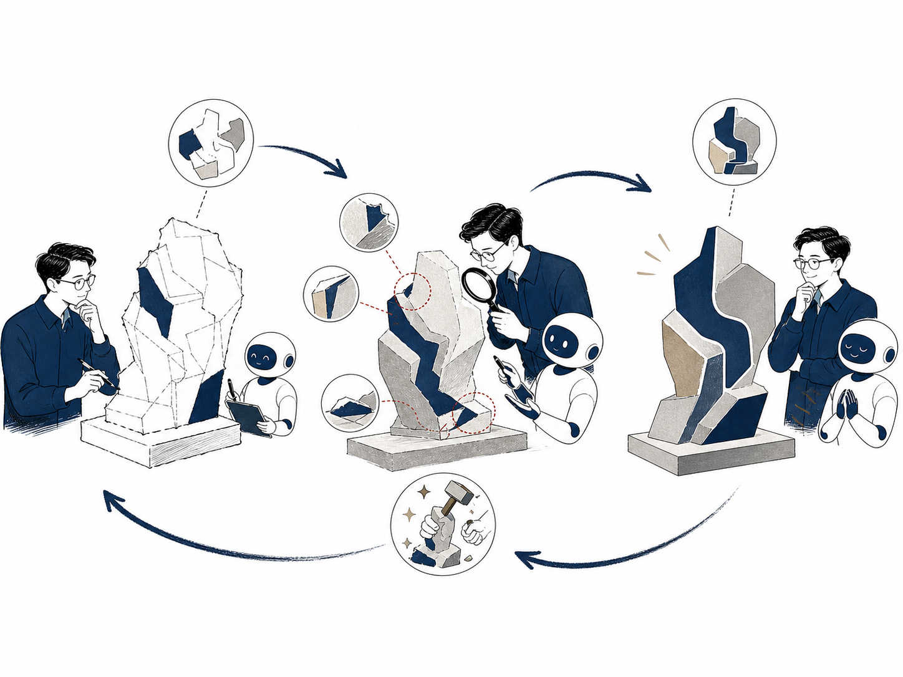
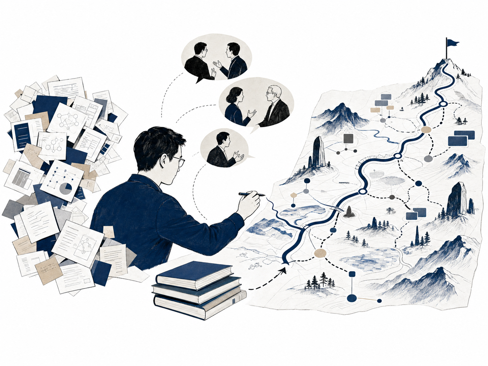
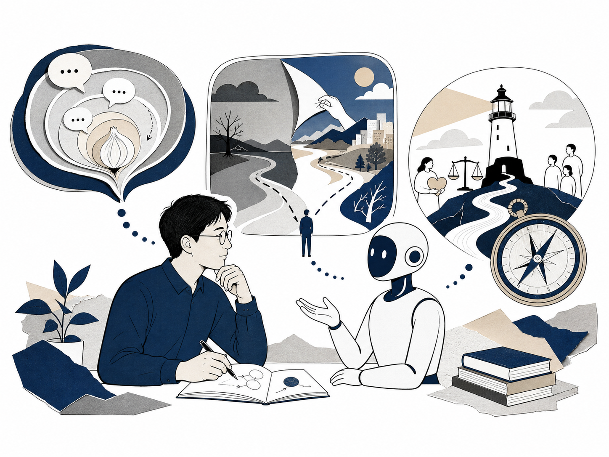
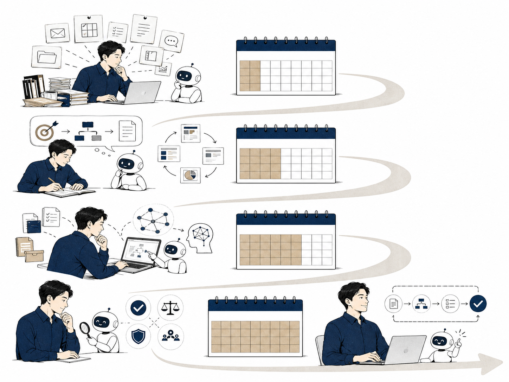

10个问题
讲清AI领导力
从“AI回答了，事情还没做完”，一路走到判断、价值与行动
系统学习AI，实现可升级路径
先解决任务表达与可靠交付，再进入思维、知识、经验和价值判断
把目标、任务与框架说清
第1章、第2章让结果可评估、可迭代、有依据
第2章建立逻辑、经验、审美与价值边界
第3章、第4章围绕一个高频任务形成稳定工作流
第1章、第5章每个问题都有实战解法
先让观众照见自己的卡点，再用书中方法和真实案例完成解释
横向大问题 · 三条真实卡点 · 一张情境图片
方法模型 · 具体案例 · 关键判断

为什么AI直接给出的结果不符合预期？
“AI回复得很快，最后还是要我自己重做一遍”
- 01
只说“帮我写一份直播方案”
- 02
把第一次回复当成最终成果
- 03
等结果出来后再补背景和限制
对照展示一句模糊需求和一张Why、How、What交付卡

清晰任务让AI从回答走向交付
把一句模糊需求改成一张可执行交付卡
明确观众、目标与成功状态
补充素材、边界、步骤与标准
定义格式、范围和验收结果
帮我写一份《AI领导力》新书直播方案
→Why：让观众找到AI卡点｜How：围绕10问讲解｜What：60分钟逐页提纲
AI答案通常只是中间结果，验收标准让它靠近真正交付
同样用AI，为什么别人的交付更快更好？
“模型是同一个，为什么他的结果总能直接进入下一步”
- 01
结果不好就换模型、换工具
- 02
用模板数量衡量自己的AI能力
- 03
只看生成速度和篇幅
用同一任务对比两种交付，逐项指出3M差异

交付差距来自方法、思维与素养的乘积
同一个模型完成同一段新书直播开场
方法负责表达、迭代和评估
思维负责拆解、抽象和创造
素养负责经验、审美和价值判断
让AI自由写开场，得到一段正确但平常的介绍
→先定观众痛点，再拆结构，最后用经验判断语言是否可信
同一个模型会放大使用者已有的能力结构
学了很多提示词框架，为什么真实任务还是不会写？
“RTF、APE、ERA都收藏了，打开AI时还是不知道从哪一句开始”
- 01
每次先找框架模板再想任务
- 02
简单任务也套入大量字段
- 03
复制角色和格式，业务目标仍然模糊
把“帮我做一份直播方案”现场改写成R、T、F三段

RTF把黄金圈翻译成一句可执行指令
T承接目的与任务，R定义执行视角，F锁定最终交付
为什么要做
采用什么视角与路径
最终交付什么
为管理层判断市场进入机会
以资深行业分析师的专业视角展开
解析市场趋势，交付PPT大纲、图表建议与SWOT矩阵
R你是一名资深行业分析师 T为管理层判断市场进入机会，解析新能源汽车市场趋势 F输出含图表建议与SWOT矩阵的8页PPT大纲
黄金圈负责想清楚，RTF负责说清楚
AI写得很完整，为什么仍然不敢直接交付？
“文字很顺、结构也齐，可我不知道里面有没有事实错误”
- 01
用流畅度、篇幅和排版判断质量
- 02
把AI自信的语气当成可靠程度
- 03
只改措辞，没有检查目标与效果
复用书中护眼灯话术，按4A逐项找出问题

4A把“看起来不错”变成可逐项检查
用4A检查一段看起来流畅的护眼灯直播话术
事实与来源准确
适合真实场景
与目标保持对齐
真正达成结果
“这款灯可以治疗近视”读起来有力，却存在事实和合规风险
改成可验证的功能表达，并补来源、适用人群与责任确认
形式完整容易掩盖事实错误和目标偏移
只会说“再优化一下”，为什么AI越改越平庸？
“它每次都说已经优化，内容却越来越像一段标准答案”
- 01
反馈只有“更专业、更深入”
- 02
每轮重写整个提示词
- 03
没有指出问题位置和判断标准
拿一段直播开场，指出两个具体问题，再做一次定向修改

反馈越具体，AI越能保留已经做对的部分
把“更有感染力”改成一次定向修改
再优化一下开场，要更有感染力、更专业
保留第一句
删除第二段空泛介绍
加入一个观众投票问题
问题位置、判断依据和目标状态共同构成有效反馈
AI知道很多，为什么始终不懂我的行业和公司？
“常识都对，一到我们的客户、产品和流程，它就开始说空话”
- 01
期待模型自动理解内部业务
- 02
每次临时补几句背景
- 03
整包文档直接上传，缺少整理和引用规则
上传一页客户访谈摘要，要求AI引用原文生成直播痛点
专业输出需要可引用、可更新的业务知识
让AI依据一页客户访谈摘要生成直播痛点
行业数据 · 论文 · 标准 · 公开案例
客户访谈 · 项目经验 · 流程 · 复盘
把资料变成可查、可控、可更新的证据单元
理解问题 · 召回片段 · 排序相关性
可引用 · 可验证 · 符合业务语境
人工校验与新增经验回流内部知识库
一页客户访谈摘要
只取客户原话，按频次归纳
3个直播痛点，每条附访谈编号
外部知识提供广度，内部知识提供语境，引用与更新让输出长期可信
AI列出很多观点，为什么分析总是浅、散、无判断？
“十条建议看起来都对，听完以后还是不知道先做什么”
- 01
只要求AI进行“深度分析”
- 02
用条目数量衡量分析深度
- 03
接受并列信息，没有追问因果和优先级
把“销量下降”拆成流量、转化、客单价和复购，再要求证据与优先级

深度来自问题结构、证据与优先级
把“销量下降”拆成四个可以验证的子问题
入口是否减少
说服链路是否失效
结构是否变化
关系是否变弱
每个分支都给出判断、证据强度、优先级和下一步
提问者先把问题拆清楚，AI才能沿明确逻辑继续推演
AI一口气给十个方案，为什么反而更难选？
“每个方案都像那么回事，我说不出哪个真正适合我们”
- 01
继续生成更多版本
- 02
用“看起来专业”作为主要标准
- 03
把多个版本平均拼接成安全答案
设定可信度、差异度、行动力三个标准，对十个方案筛选
好选择来自标准、经验与审美的共同判断
十个直播标题只保留真正适合这本书的一个
先保留差异，不急着拼成平均答案
可信度 · 差异度 · 行动力
经验判断可行性，审美判断是否真正适合
十个标题都顺口，现场凭感觉挑一个
→按可信度、差异度、行动力逐项筛选，再做最终判断
生成选项增加以后，选择标准需要同步提高
AI提高了效率，为什么仍然不知道值不值得做？
“方案能提高转化，可它会不会损害长期信任”
- 01
把短期效率和转化当成唯一目标
- 02
直接采用AI给出的最优解
- 03
把价值判断也交给模型
复用书中客户沟通案例，用普遍化检验重写方案

路径可以交给AI推演，价值边界需要人来承担
多卖20%的方案要求模糊一项关键信息
方案建立在哪个前提上
收益与代价由谁承担
信任与关系会怎样变化
所有人都这样做会怎样
隐藏关键信息可以提升20%转化，于是直接采用
→追问所有商家都这样做的后果，并把长期信任纳入判断
效率、信任和长期影响需要放在同一张判断表中
装了很多AI工具，为什么每天反而更忙？
“收藏夹越来越长，真正稳定跑起来的工作流还是没有”
- 01
追着新品更换工具和界面
- 02
看到功能再临时寻找用途
- 03
流程尚未跑通就开始自动化
每人写下一个每周重复三次的任务，现场匹配一种工具形态

一个高频任务跑通后，工具才会进入工作流
把每周重复三次的任务固定成30天练习
选择每周重复三次以上的工作
沉淀素材、背景和启动方式
形成可复用的流程和检查表
任务出现新需要时再增加工具
一周试三个新工具，同一任务每次重新学习和搬运背景
→固定一项周报任务，连续30天使用同一套输入、步骤和检查表
工具切换会增加学习成本和上下文成本
从会提问到会行动，十个问题完成四次升级
每个问题对应一个具体卡点，也对应一段可以立刻开始的阅读路径
把目标、任务与框架说清
第1章、第2章让结果可评估、可迭代、有依据
第2章建立逻辑、经验、审美与价值边界
第3章、第4章围绕一个高频任务形成稳定工作流
第1章、第5章